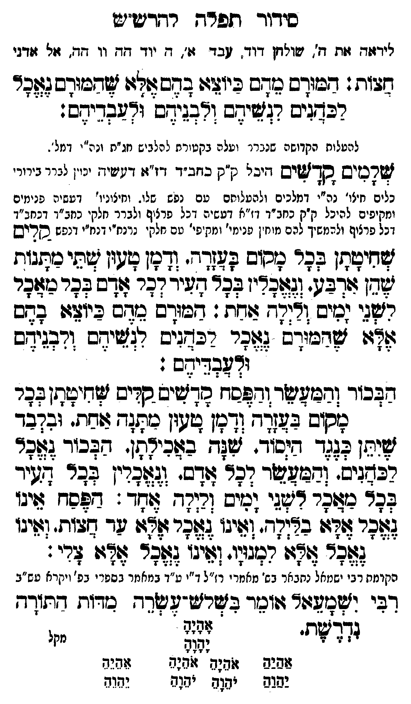

Neue Klartextfassung
[ליראה את ה' שולחן דוד עבד א, ה יוד הה וו הה, אל אדני,] חצות: המורם מהם כיוצא בהם אלא שהמורם נאכל לכהנים לנשיהם ולבניהם ולעבדיהם: [להעלות הקדושה שנברר ועלה בקטורת לכלים חו"ם וכ"י דמל'.] שלמים קדשים [היכל ק"ק כחב"ד דז"א דעשיה יכוין לברר כלים חיצוני' נה"י דמלכים ולהעלותם עם נפש שלו וחיצוניות עשיה פנימי' ומקיפים להיכל ק"ק כחב"ד דז"א דעשיה דכל פרצוף ולברר חלקי כחב"ד דכחב"ד דמלכים דכל פרצוף ולהמשיך להם חלקי מו' פנימיים ומקיפים עם חלקי נרנח"י דנרנח"י דנפש. [?]] קלים שחיטתן בכל מקום בעזרה. ודמן טעון שתי מתנות שהן ארבע. ונאכלין בכל העיר לכל אדם בכל מאכל לשני ימים ולילה אחד: המורם מהם כיוצא בהם אלא שהמורם נאכל לכהנים לנשיהם ולבניהם ולעבדיהם: הבכור והמעשר והפסח קדשים קלים שחיטתן בכל מקום בעזרה. ודמן טעון מתנה אחת. ובלבד שיתן כנגד היסוד. שנה באכילתן. הבכור נאכל לכהנים והמעשר לכל אדם. ונאכלין בכל העיר בכל מאכל לשני ימים ולילה אחד: הפסח אינו נאכל אלא בלילה ואינו נאכל אלא עד חצות. ואינו נאכל אלא למנויו. ואינו נאכל אלא צלי: (הקדמת רבי ישמעאל וכו' מהרי"ו ז"ל י"ג מדות כמו ט"ר, ע"ב [?]) רבי ישמעאל אומר בשלש עשרה מדות התורה נדרשת. אָהָיָהָ יָהָוָהָ === טבלה === [טור ימין] אַהַיַהַ יַהַוַהַ [טור אמצעי] אֹהֵיָהֵ אֹהֵיָהֵ יֹהֵוָהֵ יֹהֵוָהֵ [טור שמאל] אֵהֵיֵהֵ יֵהֵוֵהֵ === סוף טבלה ===
Original gegen neue OCR · Niqqud für Vergleich ausgeblendet
Original
[ליראה את ה'K165-001 שולחן דוד עבד א, הK165-002 יוד ההK165-003 וו הה, אל אדני,] חצות: המורם מהם כיוצא בהם אלא שהמורם נאכל לכהנים לנשיהם ולבניהם ולעבדיהם: [להעלותK165-004 הקדושה שנבררK165-005 ועלה בקטורת לכלים חו"ם וכ"י דמל'.] שלמים קדשים [היכל ק"ק כחב"ד דז"א דעשיה יכוין לבררK165-006 כלים חיצוני'K165-007 נה"י דמלכים ולהעלותםK165-008 עם נפש שלו וחיצוניות עשיה פנימי'K165-009 ומקיפים להיכל ק"ק כחב"ד דז"א דעשיה דכל פרצוף ולברר חלקיK165-010 כחב"ד דכחב"ד דמלכים דכל פרצוף ולהמשיךK165-011 להם חלקי מו' פנימיים ומקיפים עם חלקי נרנח"י דנרנח"י דנפש. ] קלים שחיטתן בכל מקום בעזרה. ודמן טעון שתי מתנות שהן ארבע. ונאכלין בכל העיר לכל אדם בכל מאכל לשני ימים ולילה אחד: המורם מהם כיוצא בהם אלא שהמורם נאכל לכהנים לנשיהם ולבניהם ולעבדיהם: הבכור והמעשר והפסח קדשים קלים שחיטתן בכל מקום בעזרה. ודמן טעון מתנה אחת. ובלבד שיתן כנגד היסוד. שנה באכילתן. הבכור נאכל לכהנים והמעשר לכל אדם. ונאכלין בכל העיר בכל מאכל לשני ימים ולילה אחד: הפסח אינו נאכל אלא בלילה ואינו נאכל אלא עד חצות. ואינו נאכל אלא למנויו. ואינו נאכל אלא צלי: (הקדמתK165-012 רבי ישמעאל וכו' מהרי"ו ז"ל י"ג מדות כמו ט"ר, ע"ב ) רבי ישמעאל אומר בשלש עשרה מדות התורה נדרשת. אהיה יהוה === טבלה === [טור ימין] אהיה יהוה [טור אמצעי] אהיה אהיה יהוה יהוה [טור שמאל] אהיה יהוה === סוף טבלה ===K165-013
OCR · fehlbar
סידוך תפר"ך רדדט"יש לידוזג גזת ד'.K165-001 שולחן דוד. בד זו'. ד.K165-002 יוד דדK165-003 וו זד. זל גודגי גלזת: מבזדש דב כיו[: בדשצוףזו שגבודס (אהד רבדניס רגזשיגם ורבנידס ירבהדיגס. לעטלותK165-004 הקדושה שגגרנךK165-005 ועלה בקטוקף להלביש נזג"ת ונה"י דמל '. שדטיש בךזשיס ויכל נ"ק בזב "ד דויזי דניציז. יין ניי נינירK165-006 כלים חצו'K165-007 נה"י דמלכים ולהעלוחםK165-008 עם נפש שלו. וחיצוניו' דעשיה פנימיםK165-009 ומקיפים להיכל ק"ק כחב"ד דז"א דעשיה דכל פרצוף ולברר נזלקיK165-010 כחב"ד דכחב"ד כל פרציף ולריזשיךK165-011 להם מיזן פנימי' ומ פי' טם חלי' :ינח"י ונ"י ונפש בריש דיתן בכר מסזס פל[דד' (דן ועון ישי כזתגוח לג] ולב. [צבר' לגר שיד גבח צלדס להר נהר רזאגי (מים וד(רח צודח : דכיודש בזדם ביזצ6 עדש אזו שרעודס (צזפר רבנים רצ:צידב ורבנים זד[בדידש : בכור (גבישיצדזדששז רךישישסיס צזיזמ[2בי זב-ב:[דד[ךחן"גיזין שלד צחח. זבזבד צג: א:לר נלד. צז בגזג([ז- דבד לגנ חביב. (רצצר דנר יךש. וגזגזין דבר (זשר זהר כצזצר צני (גיש ולי(- לזד דצל יי: (זכרצלי בנזר זיו גאגר וי זד צד (גיגו שפר זז: דעלי. וזג. גזגר ווי צדי הקומחK165-012 רבי ישמאל נחבאר בש' מאחר י רז"ל ד"י ע"ד במאמזד בספרי בפ' ויקרא טש"ב דבי (זלעז6גוץ (וחך בשרש-לשד- במדות גתודד דדש. [ ל זשיש זז(ש(7' (ל(ג(- 7(6:ד נפגש י"7(2 יגג לללK165-013